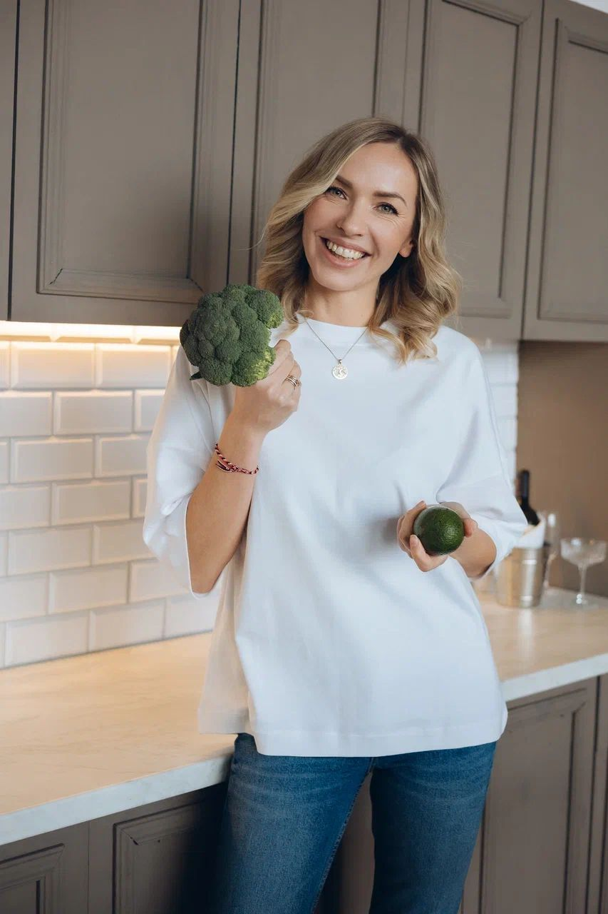
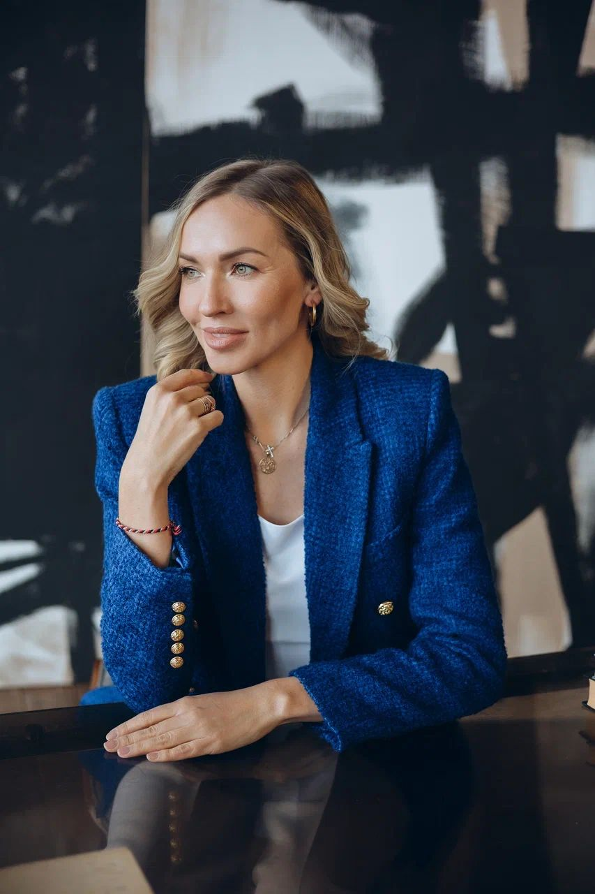
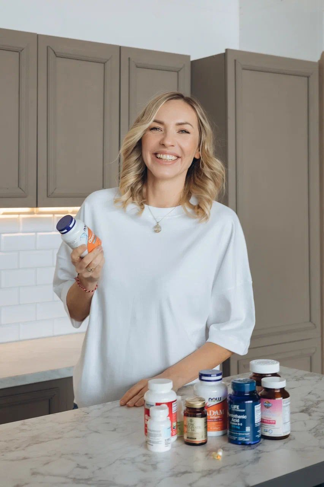

«Вес стоит? Даже если вы едите правильно»
Пять частых причин и тест: справитесь сами или стоит разобраться глубже.
Напишите ВЕС в Telegram
Нутри-коуч · Health-коуч · Специалист по модификации образа жизни
Я ищу причину, а не сажаю на диету. Смотрю на питание, результаты обследований, сон, стресс и привычки вместе и нахожу, что на самом деле держит вес. Дальше вы получаете понятный план и поддержку, пока новые привычки не станут вашей нормой, а вес не сдвинется без срывов и голода.
Не знаете, с чего начать? Бесплатный созвон 15 минут

Узнаёте себя?
Вес — это система, а не сила воли. Питание, гормоны, ЖКТ, сон и стресс связаны между собой. Пока не найдена причина, любая диета работает до первого срыва.
Почему «правильно» не работает
Это касается не только веса. Те же причины стоят за усталостью, тягой к сладкому и плохим сном.
Маленькая котлетка и гора гарнира. Через час снова голод и тяга к сладкому.
Жёсткие ограничения поднимают кортизол. Тело начинает экономить, потом случается срыв.
Поздний ужин из одних углеводов мешает и снижению веса, и глубокому сну.
Нет нормальных приёмов пищи, зато весь день печенье и что-то на ходу.
Углеводный обмен, щитовидная железа, железо. Это видно только по анализам.
Пройдите короткий тест прямо здесь: 10 вопросов, около 2 минут. В конце увидите, с чем стоит работать в первую очередь.
Метод Ольги Трутневой
Я смотрю на четыре области вместе, потому что проблема почти никогда не живёт в одной из них.
Питание. Режим, состав тарелки, переносимость продуктов, отношения с едой.
Тело и симптомы. Жалобы, анализы и их динамика в контексте всей вашей ситуации.
Нервная система и мышление. Стресс, тревога, сон и мысли о еде. Работаю психологическими упражнениями и эриксоновской медитацией.
Образ жизни. Нагрузка, восстановление, движение и ваши реальные обстоятельства.
Работа с мышлением
У меня высшее психологическое образование. В сопровождении мы не только правим питание, но и делаем психологические упражнения: разбираем мысли, которые ведут к срывам, страху еды и чувству вины, и учимся спокойно внедрять новые привычки. На каждой встрече есть эриксоновская медитация, которая помогает снять напряжение и закрепить изменения.
Чем это отличается
| Как обычно | Как в моём методе |
|---|---|
| Готовое меню и подсчёт калорий | Тарелка под ваш режим, вкусы и анализы. Белок в каждом приёме пищи |
| Список из десяти БАДов «на всякий случай» | Только то, что нужно по вашим анализам, с понятным сроком приёма и пересдачей |
| «Анализы в норме, вы здоровы» | Смотрю на ваши показатели в связке с питанием, образом жизни и самочувствием, и в динамике |
| Поменять всё с понедельника | Два-три главных шага, которые реально выполнить, и спокойный темп |
| Справляйтесь сами | Еженедельные встречи, чат и отчёт «было → стало» каждый месяц |
| Сила воли против тяги и стресса | Психологические упражнения и эриксоновская медитация: меняются мысли о еде, срывах и привычках |
Продукты и цены
Можно начать с бесплатного материала и практикума, а можно сразу прийти на личную консультацию.
БесплатноПрактикум 990 ₽Дорожная карта 7 000 ₽КонсультацияСопровождение
Пять частых причин и тест: справитесь сами или стоит разобраться глубже.
Напишите ВЕС в Telegram
12 вопросов: что будит именно вас и что поменять уже сегодня вечером.
Напишите СОН в Telegram
Запись, которая помогает расслабиться, снизить тревогу и спокойнее заснуть.
Напишите МЕДИТАЦИЯ в Telegram
Если причина в привычках и вы готовы начать сами
Если хотите понять свою картину и с чего начать, но пока без консультации
Бонус: если в течение 2 недель решите прийти на консультацию, 7 000 ₽ засчитаются в её стоимость.
Если вы многое пробовали, а причина так и не найдена
На выходе: подробная дорожная карта на 2–3 месяца и план повторной проверки.
* Детская консультация включает всё то же самое. Встречаюсь с родителями или с ребёнком и подростком, питание и режим подбираю по возрасту, а дорожную карту делаю понятной самому ребёнку. Если подросток приходит на встречу сам, добавляем эриксоновскую медитацию.
Если хотите не просто план, а дойти до результата вместе
Каждый месяц: отчёт «было → стало» по энергии, сну, ЖКТ, весу и самочувствию. Устойчивые изменения обычно складываются за 2–3 месяца.
Для тех, кто снижает вес на препаратах по назначению врача. Как сохранить мышцы и кожу, поддержать ЖКТ и удержать результат после отмены. Решение о препарате и дозе принимает только врач.
Честно о формате

Обо мне
«Помню, как это было: страх, бессилие, ощущение конца…»
Панические атаки, бессонные ночи, постоянный стресс. Лекарства лишь маскировали симптомы, а жизнь теряла краски.
Эта борьба привела меня к глубокому изучению интегративного подхода к питанию и образу жизни. Я годами училась и выстроила систему, которая вернула мне жизнь. Больше пяти лет я в ремиссии. Теперь помогаю женщинам вернуть энергию, спокойный сон и лёгкость в теле.
У меня высшее психологическое образование. Поэтому в моей работе питание и анализы всегда идут вместе с нервной системой и привычками.
Я отдельно прошла программу «Детская нутрициология», поэтому консультирую не только взрослых, но и детей и подростков. Часто здоровые привычки проще выстроить всей семьёй.
Образование
Член Союза «Превентивной, регенеративной и трансляционной медицины» и Ассоциации специалистов образовательной и функциональной медицины.
Отзывы
Две истории из сопровождения, своими словами клиенток.
«Вес перестал расти после 8 лет борьбы, а я наконец начала получать удовольствие от еды»
Моей самой большой проблемой было то, что я восемь лет боролась с лишним весом, который рос из года в год. Как следствие, у меня было разбалансированное питание, хаос в режиме, страх еды и постоянные качели: то ограничения, то срывы. Я была измотана морально и уже не верила, что смогу наладить отношения с едой. К этому добавлялись эмоциональные качели, тревога, раздражительность, плохой сон, сильные ПМС, усталость, непреодолимая тяга к сладкому, отёчность и вздутие живота. Не хотелось смотреть на себя в зеркало и наряжаться.
Самое большое моё достижение за месяц работы — я поменяла отношение к еде и к заботе о своём теле. Научилась полноценным приёмам пищи без перекусов. Ушли эмоциональные заедания и тяга к сладкому. Я стала спокойнее, энергичнее, настроение хорошее, убрала любое насилие над своим телом. Начала больше отдыхать и высыпаться. Вес перестал расти, и я даже похудела на 3,5 кг без изматывающих тренировок и диет. Тело стало подтянутым, живот плоским, целлюлит уменьшился в разы. Еда стала разнообразнее, и я наконец начала получать от неё удовольствие, есть вкусное, а не «диетическое».
Самым ценным для меня была ваша стопроцентная включённость. Я чувствовала заботу, поддержку и вашу веру в меня весь месяц. И при этом никакого давления: вы вели меня очень бережно и деликатно, за что я безмерно благодарна. Я искренне считаю, что такой подарок себе должен сделать каждый человек.
«Я снова чувствую себя живой. Появились силы и инструменты, чтобы заботиться о себе»
Я пришла к Ольге с сильной тревожностью, паническими атаками и ощущением, что у меня не осталось сил на привычную жизнь. За этим стояли годы стресса, неправильного питания и разных жизненных событий, которые постепенно забирали энергию.
За три месяца Ольга помогла мне подойти к своему состоянию комплексно. Мы провели чекап, посмотрели анализы, выявили дефициты витаминов и минералов, скорректировали питание. Всё это время Ольга внимательно сопровождала меня, контролировала питание, проводила медитации и помогала понять, как питание и состояние организма связаны с тревожностью.
Самое важное: я не просто получила рекомендации, а постепенно внедрила новые привычки, которые хочу сохранить на всю жизнь. Это контрастный душ, дыхательные практики, правильный приём витаминов, забота о сне, осознанное отношение к питанию. Я научилась замечать тревожные мысли и не позволять тревоге управлять моей жизнью.
Я действительно чувствую изменения. Появилось больше энергии и желания жить привычной жизнью, панические атаки полностью прекратились. Через три месяца мы пересдали анализы, и результаты оказались практически идеальными. Приятным бонусом стали минус 5 кг, ушли отёки, кожа стала ровнее, волосы качественнее. Но главный результат для меня даже не весы и не анализы, а то, что я снова чувствую себя живой. Я понимаю, что это не волшебная таблетка, а совокупность изменений, которые постепенно становятся частью жизни. И у меня остались привычки, которые я могу применять сама и прививать семье.
Искренне рекомендую Ольгу тем, кто хочет не просто изменить рацион или сбросить вес, а глубже разобраться в своём состоянии и вернуть себе качество жизни.
Отзывы публикуются с согласия клиенток. Результаты индивидуальны.
Результат чувствую уже вторую неделю: с утра как на энергетическом подъёме, столько всего за день стала успевать! Рекомендации перед сном вообще бомба. Это не стоит никаких, даже самых больших денег.
Ольга З.Я сама пробовала наладить образ жизни и точно могу сказать: с коучем это намного проще. После сопровождения у меня благодарность, радость и уверенность в результатах. Очень понравился индивидуальный подход.
Анна Ш.С вашей помощью и медитацией я нашла силы и душевное равновесие и наконец сдала экзамен! С вами легко справилась с внутренним беспокойством и тревогой.
Татьяна В.Вопросы

Чаще всего не срабатывают диеты и списки добавок, потому что они не учитывают причину. Мы начинаем с анкеты и гипотез, проверяем их по результатам обследований и меняем только то, что действительно важно в вашем случае.
Это не просто 1,5–2 часа разговора. До встречи я изучаю вашу анкету симптомов, питание и результаты обследований. После встречи вы получаете дорожную карту на 2–3 месяца. Многие клиентки после этого перестают тратить деньги на ненужные БАДы и случайные обследования.
Проще всего записаться на бесплатный созвон на 15 минут: я задам несколько вопросов и честно скажу, какой формат вам нужен. Или пройдите тест в бесплатном гайде «Вес стоит?». Если у вас отмечены пункты про привычки, начните с практикума за 990 ₽. Хотите понять свою картину, но пока без встречи — подойдёт письменная дорожная карта за 7 000 ₽. Если есть усталость при «правильном» питании или три пункта и больше, лучше сразу прийти на консультацию. Сопровождение подходит тем, кому важна поддержка, пока новые привычки не закрепятся.
Сложных схем не будет. Мы выбираем два-три главных шага, которые встраиваются в ваш день. В практикуме это одно задание на 5–10 минут в день.
Если у вас есть результаты обследований за последние три месяца, пришлите их вместе с анкетой. Если их нет, я подскажу, какие анализы стоит сдать или обсудить с врачом. Список зависит от вашего запроса, а не «всё подряд».
Нет. Нутрицевтики я рекомендую только когда они действительно нужны по вашей картине, с понятным сроком приёма. Купить их вы можете где удобно.
Это мягкая практика в лёгком трансе, похожем на состояние, когда вы зачитались или задумались. Вы всё слышите и контролируете. Она помогает снизить тревогу, расслабиться и легче менять привычки, в том числе пищевые.
Да, я прошла программу «Детская нутрициология». Чаще всего я встречаюсь с родителями, а подростки могут прийти на встречу сами. Я так же внимательно смотрю весь организм: анкету, питание, результаты обследований. Рекомендации учитывают возраст и вкусы ребёнка, чтобы их было реально выполнять.
Нет. Я не ставлю диагнозы и не назначаю лечение. Если вижу признаки, которые требуют внимания врача, говорю об этом и подсказываю, к какому специалисту обратиться и какие вопросы ему задать.
Первый шаг
Напишите мне в Telegram кодовое слово, и я отвечу лично. Подскажу, с какого формата лучше начать именно вам.